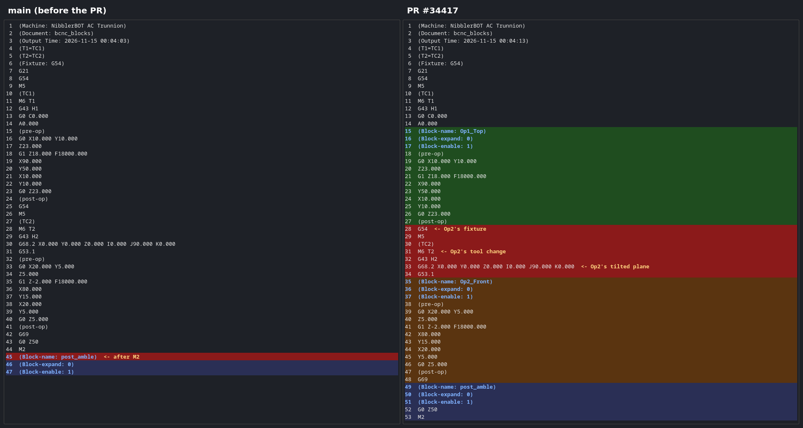
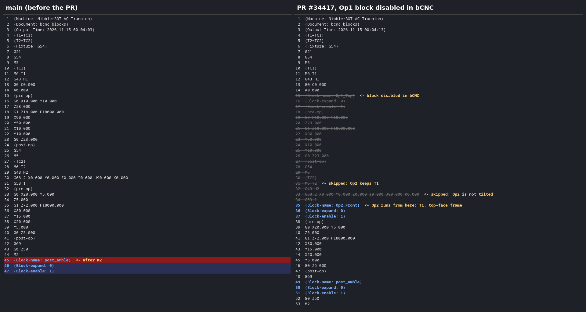
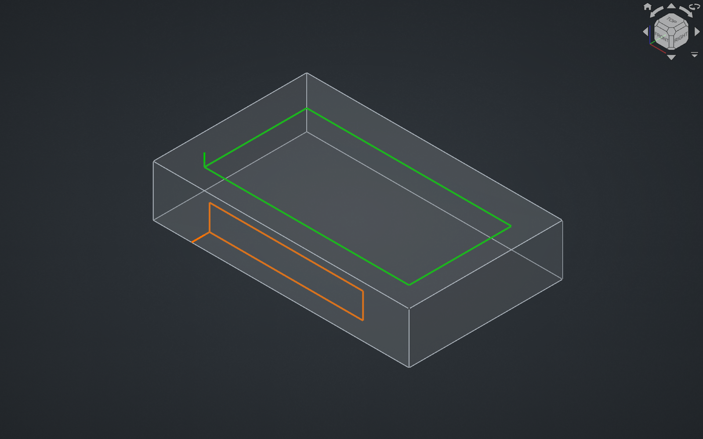

CAM unit tests with the PR applied: Ran 2138 tests · OK (skipped=11, expected failures=4)



post_amble block now comes before the post-job lines and M2. On main there were no operation
blocks at all. The full CAM suite passes, including the new test.Processor.export2() called _expand_bcnc_commands() and dropped its return value. That function
rebuilds the postable list, so on main no operation ever got a (Block-name: <op>) header; only
(Block-name: post_amble) came out, appended after M2. The PR keeps the returned list, runs the
pass before _expand_pre_item(), inserts the header before the operation (-1 instead of 1),
moves _expand_bcnc_postamble() before _expand_trailing_lines(), and adds
test104_bcnc_block_position. The PR text is only a forum link; the commit message describes the
change.
cam_ab, side A = the commit under the PR, side B = the PR), headless, on a
synthetic job with bCNC output on and every hook line set to a marker (preamble, pre/post job,
pre/post fixture, pre/post tool change, pre/post operation, tool return, postamble):
_solve_positions refuses the tilted planes (cannot index to: No solutions meet tolerance requirements) on both main and the PR, so I used the synthetic job above with the same .fcm.post_amble comes before the
last M2; it does not check where each operation's header sits relative to its tool change.| main | PR | |
|---|---|---|
| Operation blocks | none | Op1_Top, Op2_Front |
post_amble block |
after M2 |
before G0 Z50 (post_job) and M2 |
| Block header vs pre-operation line | n/a | header first (correct) |
Op2's G54, M5, M6 T2, G43 H2, G68.2 ... J90, G53.1 |
no blocks | inside the Op1_Top block |
PR output, trimmed:
(Block-name: Op1_Top)
(Block-expand: 0)
(Block-enable: 1)
(pre-op)
... Op1 moves ...
(post-op)
G54
M5
(TC2)
M6 T2
G43 H2
G68.2 X0.000 Y0.000 Z0.000 I0.000 J90.000 K0.000
G53.1
(Block-name: Op2_Front)
(Block-expand: 0)
(Block-enable: 1)
(pre-op)
... Op2 moves ...
(post-op)
G69
(Block-name: post_amble)
(Block-expand: 0)
(Block-enable: 1)
G0 Z50
M2
Next operation's tool change, fixture and tilted-plane setup land in the previous operation's
block. _expand_bcnc_commands() (src/Mod/CAM/Path/Post/Processor.py:1728, insert at -1) puts
the header directly before the operation item. Tool-controller items, fixture items and the
pose-change items from _expand_workplane_frames() (which runs earlier) sit before that item, so
the header lands after them. Disabling Op1's block in bCNC then also skips Op2's M6 T2 / G43 H2
(Op2 cuts with T1 and T1's length offset) and its G68.2 / G53.1 (Op2 cuts in the top-face frame
instead of on the front face). The old exporter (UtilsExport.export_common) gave fixture and
tool-controller objects their own blocks, so they stayed enabled.
Same with fixtures on a 3-axis job (G54 + G55, ordered by operation): Op1's G55 pass gets a
second Op1 block, and both the G55 switch and Op2's G54 + M6 T2 sit at the end of the
preceding Op1 block.
Repro:
M6 for Op2 (and G68.2 / G55 if present) comes before (Block-name: Op2), inside Op1's
block.A fix would insert the header before the first item that belongs to the operation (its fixture, tool-controller and pose-change items with their pre-lines), or give those items their own blocks as the legacy exporter did.
None.
Dropped from the code review: the last operation's post-operation lines staying in its own block
(correct; tool return is emitted with each tool change, not at the end), export2() now keeping
the list _expand_bcnc_commands() returns (it always built and returned a new list; dropping it
was the bug), test-strength and docstring/style remarks.
The description is only a forum link; everything below comes from the commit message or diff.
post_amble block moved from after to before the post-job and postamble lines (tested).demo.mp4: the setup, main vs PR output, and what bCNC skips when Op1 is disabled.setup.png: the two operations on the test block.blocks_main_vs_pr.png: both outputs side by side, blocks colored, Op2's misplaced lines in red.op1_disabled.png: the PR output with the Op1 block struck out.